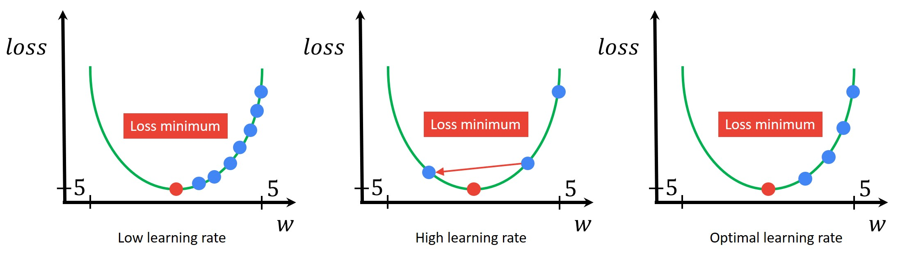

The learning rate (α) is one of the most critical hyperparameters in gradient descent. It controls how big a step we take when updating our parameters. Choosing the right learning rate determines whether your model converges quickly, slowly, or not at all.
The Gradient Descent Update Rule
Recall the gradient descent update formula:
Where:
wis the parameter being updatedα(alpha) is the learning rate∂J(w)/∂wis the gradient (partial derivative of the cost function)
The learning rate α determines the size of the step we take in the direction of steepest descent.
Three Critical Scenarios
1. Learning Rate Too Small (α ≪ 1)
What happens:
- α multiplied by a very small step
- The outcome of the process: end up decreasing the cost J(w) but very slowly
- Requires a lot of steps
- If α is small, gradient descent will work but will take a lot of time
Result: Slow convergence - the algorithm works correctly but inefficiently.
2. Learning Rate Too Large (α ≫ 1)
What happens:
- Update w with giant step
- Cost gets worse for large step
- Gradient descent overshoots
- Fails to converge or diverges
Result: No convergence - the algorithm bounces around and never settles at the minimum.
3. Already at Local Minimum
What happens:
When you're already at a local minimum, the slope (gradient) equals zero. Consider when the current value w = 5 at a local minimum:
- At the minimum: slope = 0, so
∂J(w)/∂w = 0 - Update becomes:
w = w - α · 0 - Simplified:
w = w
Result: If you're already at a local minimum, gradient descent leaves w unchanged. This is the desired behavior - the algorithm has found an optimum and stops moving.
Learning Rate Visualization

How different learning rates affect convergence: too small (slow), too large (overshooting), and at local minimum (stable)
Choosing the Right Learning Rate
Finding the optimal learning rate requires experimentation:
- Start with common values: Try 0.001, 0.01, 0.1, 1.0
- Plot the cost function: Monitor J(w) over iterations
- Look for steady decrease: The cost should decrease smoothly
- Signs of good α: Consistent reduction without wild fluctuations
- Signs of bad α: Cost increasing, oscillating, or decreasing too slowly
Advanced Techniques
Modern optimization algorithms address learning rate challenges:
- Learning rate schedules: Decrease α over time (start large, end small)
- Adaptive methods: Adam, RMSprop, AdaGrad adjust α automatically per parameter
- Momentum: Helps overcome small local minima and speeds convergence
Key Takeaways
The learning rate controls the speed and success of gradient descent:
- Too small: slow but steady progress
- Too large: unstable and may diverge
- Just right: efficient convergence to minimum
- At minimum: gradient is zero, updates stop naturally
Tuning the learning rate is essential for training effective machine learning models. Always experiment with multiple values and monitor your cost function.